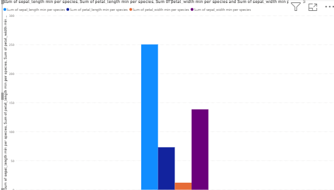
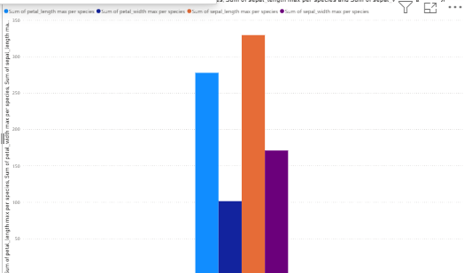
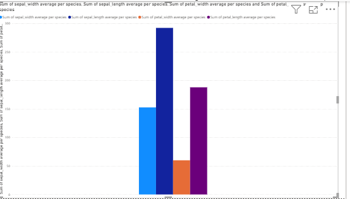

EKSPLORASI DATA#
Sebelum melakukan analisis lebih lanjut, langkah awal yang AKAN dilakukan adalah eksplorasi data pada dataset iris. Dataset ini berisi informasi tentang karakteristik bunga iris yang jumlahnya ada sebanyak 150 data dan terdiri dari empat atribut utama, yaitu sepal length, sepal width, petal length, dan petal width, serta satu atribut kelas yaitu species yang menunjukkan jenis bunga (Iris-setosa, Iris-versicolor, dan Iris-virginica).
import pandas as pd
df = pd.read_csv("IRIS.csv")
pd.set_option("display.max_rows", None)
pd.set_option("display.max_columns", None)
pd.set_option("display.width", None)
pd.set_option("display.max_colwidth", None)
print(df)
sepal_length sepal_width petal_length petal_width species
0 5.1 3.5 1.4 0.2 Iris-setosa
1 4.9 3.0 1.4 0.2 Iris-setosa
2 4.7 3.2 1.3 0.2 Iris-setosa
3 4.6 3.1 1.5 0.2 Iris-setosa
4 5.0 3.6 1.4 0.2 Iris-setosa
5 5.4 3.9 1.7 0.4 Iris-setosa
6 4.6 3.4 1.4 0.3 Iris-setosa
7 5.0 3.4 1.5 0.2 Iris-setosa
8 4.4 2.9 1.4 0.2 Iris-setosa
9 4.9 3.1 1.5 0.1 Iris-setosa
10 5.4 3.7 1.5 0.2 Iris-setosa
11 4.8 3.4 1.6 0.2 Iris-setosa
12 4.8 3.0 1.4 0.1 Iris-setosa
13 4.3 3.0 1.1 0.1 Iris-setosa
14 5.8 4.0 1.2 0.2 Iris-setosa
15 5.7 4.4 1.5 0.4 Iris-setosa
16 5.4 3.9 1.3 0.4 Iris-setosa
17 5.1 3.5 1.4 0.3 Iris-setosa
18 5.7 3.8 1.7 0.3 Iris-setosa
19 5.1 3.8 1.5 0.3 Iris-setosa
20 5.4 3.4 1.7 0.2 Iris-setosa
21 5.1 3.7 1.5 0.4 Iris-setosa
22 4.6 3.6 1.0 0.2 Iris-setosa
23 5.1 3.3 1.7 0.5 Iris-setosa
24 4.8 3.4 1.9 0.2 Iris-setosa
25 5.0 3.0 1.6 0.2 Iris-setosa
26 5.0 3.4 1.6 0.4 Iris-setosa
27 5.2 3.5 1.5 0.2 Iris-setosa
28 5.2 3.4 1.4 0.2 Iris-setosa
29 4.7 3.2 1.6 0.2 Iris-setosa
30 4.8 3.1 1.6 0.2 Iris-setosa
31 5.4 3.4 1.5 0.4 Iris-setosa
32 5.2 4.1 1.5 0.1 Iris-setosa
33 5.5 4.2 1.4 0.2 Iris-setosa
34 4.9 3.1 1.5 0.1 Iris-setosa
35 5.0 3.2 1.2 0.2 Iris-setosa
36 5.5 3.5 1.3 0.2 Iris-setosa
37 4.9 3.1 1.5 0.1 Iris-setosa
38 4.4 3.0 1.3 0.2 Iris-setosa
39 5.1 3.4 1.5 0.2 Iris-setosa
40 5.0 3.5 1.3 0.3 Iris-setosa
41 4.5 2.3 1.3 0.3 Iris-setosa
42 4.4 3.2 1.3 0.2 Iris-setosa
43 5.0 3.5 1.6 0.6 Iris-setosa
44 5.1 3.8 1.9 0.4 Iris-setosa
45 4.8 3.0 1.4 0.3 Iris-setosa
46 5.1 3.8 1.6 0.2 Iris-setosa
47 4.6 3.2 1.4 0.2 Iris-setosa
48 5.3 3.7 1.5 0.2 Iris-setosa
49 5.0 3.3 1.4 0.2 Iris-setosa
50 7.0 3.2 4.7 1.4 Iris-versicolor
51 6.4 3.2 4.5 1.5 Iris-versicolor
52 6.9 3.1 4.9 1.5 Iris-versicolor
53 5.5 2.3 4.0 1.3 Iris-versicolor
54 6.5 2.8 4.6 1.5 Iris-versicolor
55 5.7 2.8 4.5 1.3 Iris-versicolor
56 6.3 3.3 4.7 1.6 Iris-versicolor
57 4.9 2.4 3.3 1.0 Iris-versicolor
58 6.6 2.9 4.6 1.3 Iris-versicolor
59 5.2 2.7 3.9 1.4 Iris-versicolor
60 5.0 2.0 3.5 1.0 Iris-versicolor
61 5.9 3.0 4.2 1.5 Iris-versicolor
62 6.0 2.2 4.0 1.0 Iris-versicolor
63 6.1 2.9 4.7 1.4 Iris-versicolor
64 5.6 2.9 3.6 1.3 Iris-versicolor
65 6.7 3.1 4.4 1.4 Iris-versicolor
66 5.6 3.0 4.5 1.5 Iris-versicolor
67 5.8 2.7 4.1 1.0 Iris-versicolor
68 6.2 2.2 4.5 1.5 Iris-versicolor
69 5.6 2.5 3.9 1.1 Iris-versicolor
70 5.9 3.2 4.8 1.8 Iris-versicolor
71 6.1 2.8 4.0 1.3 Iris-versicolor
72 6.3 2.5 4.9 1.5 Iris-versicolor
73 6.1 2.8 4.7 1.2 Iris-versicolor
74 6.4 2.9 4.3 1.3 Iris-versicolor
75 6.6 3.0 4.4 1.4 Iris-versicolor
76 6.8 2.8 4.8 1.4 Iris-versicolor
77 6.7 3.0 5.0 1.7 Iris-versicolor
78 6.0 2.9 4.5 1.5 Iris-versicolor
79 5.7 2.6 3.5 1.0 Iris-versicolor
80 5.5 2.4 3.8 1.1 Iris-versicolor
81 5.5 2.4 3.7 1.0 Iris-versicolor
82 5.8 2.7 3.9 1.2 Iris-versicolor
83 6.0 2.7 5.1 1.6 Iris-versicolor
84 5.4 3.0 4.5 1.5 Iris-versicolor
85 6.0 3.4 4.5 1.6 Iris-versicolor
86 6.7 3.1 4.7 1.5 Iris-versicolor
87 6.3 2.3 4.4 1.3 Iris-versicolor
88 5.6 3.0 4.1 1.3 Iris-versicolor
89 5.5 2.5 4.0 1.3 Iris-versicolor
90 5.5 2.6 4.4 1.2 Iris-versicolor
91 6.1 3.0 4.6 1.4 Iris-versicolor
92 5.8 2.6 4.0 1.2 Iris-versicolor
93 5.0 2.3 3.3 1.0 Iris-versicolor
94 5.6 2.7 4.2 1.3 Iris-versicolor
95 5.7 3.0 4.2 1.2 Iris-versicolor
96 5.7 2.9 4.2 1.3 Iris-versicolor
97 6.2 2.9 4.3 1.3 Iris-versicolor
98 5.1 2.5 3.0 1.1 Iris-versicolor
99 5.7 2.8 4.1 1.3 Iris-versicolor
100 6.3 3.3 6.0 2.5 Iris-virginica
101 5.8 2.7 5.1 1.9 Iris-virginica
102 7.1 3.0 5.9 2.1 Iris-virginica
103 6.3 2.9 5.6 1.8 Iris-virginica
104 6.5 3.0 5.8 2.2 Iris-virginica
105 7.6 3.0 6.6 2.1 Iris-virginica
106 4.9 2.5 4.5 1.7 Iris-virginica
107 7.3 2.9 6.3 1.8 Iris-virginica
108 6.7 2.5 5.8 1.8 Iris-virginica
109 7.2 3.6 6.1 2.5 Iris-virginica
110 6.5 3.2 5.1 2.0 Iris-virginica
111 6.4 2.7 5.3 1.9 Iris-virginica
112 6.8 3.0 5.5 2.1 Iris-virginica
113 5.7 2.5 5.0 2.0 Iris-virginica
114 5.8 2.8 5.1 2.4 Iris-virginica
115 6.4 3.2 5.3 2.3 Iris-virginica
116 6.5 3.0 5.5 1.8 Iris-virginica
117 7.7 3.8 6.7 2.2 Iris-virginica
118 7.7 2.6 6.9 2.3 Iris-virginica
119 6.0 2.2 5.0 1.5 Iris-virginica
120 6.9 3.2 5.7 2.3 Iris-virginica
121 5.6 2.8 4.9 2.0 Iris-virginica
122 7.7 2.8 6.7 2.0 Iris-virginica
123 6.3 2.7 4.9 1.8 Iris-virginica
124 6.7 3.3 5.7 2.1 Iris-virginica
125 7.2 3.2 6.0 1.8 Iris-virginica
126 6.2 2.8 4.8 1.8 Iris-virginica
127 6.1 3.0 4.9 1.8 Iris-virginica
128 6.4 2.8 5.6 2.1 Iris-virginica
129 7.2 3.0 5.8 1.6 Iris-virginica
130 7.4 2.8 6.1 1.9 Iris-virginica
131 7.9 3.8 6.4 2.0 Iris-virginica
132 6.4 2.8 5.6 2.2 Iris-virginica
133 6.3 2.8 5.1 1.5 Iris-virginica
134 6.1 2.6 5.6 1.4 Iris-virginica
135 7.7 3.0 6.1 2.3 Iris-virginica
136 6.3 3.4 5.6 2.4 Iris-virginica
137 6.4 3.1 5.5 1.8 Iris-virginica
138 6.0 3.0 4.8 1.8 Iris-virginica
139 6.9 3.1 5.4 2.1 Iris-virginica
140 6.7 3.1 5.6 2.4 Iris-virginica
141 6.9 3.1 5.1 2.3 Iris-virginica
142 5.8 2.7 5.1 1.9 Iris-virginica
143 6.8 3.2 5.9 2.3 Iris-virginica
144 6.7 3.3 5.7 2.5 Iris-virginica
145 6.7 3.0 5.2 2.3 Iris-virginica
146 6.3 2.5 5.0 1.9 Iris-virginica
147 6.5 3.0 5.2 2.0 Iris-virginica
148 6.2 3.4 5.4 2.3 Iris-virginica
149 5.9 3.0 5.1 1.8 Iris-virginica
Dalam tahap eksplorasi data ada beberapa hal penting yang harus dipehatikan, yaitu sebagai berikut:
1. Nilai minimum dan maksimum dari setiap kolom#
Pada tahap awal eksplorasi ini saya akan menunjukkan nilai minimun dan maksimum dari keempat kolom pada dataset tersebut dalam bentuk diagram batang. Tujuannya adalah untuk mengetahui rentang data atau batas bawah dan batas atas dari ukuran bunga iris. Dengan cara ini, dapat diketahui seberapa kecil dan seberapa besar ukuran tiap atribut bunga.
Grafik Minimum#

Batang biru muda (sepal length) paling tinggi, artinya panjang kelopak (sepal length) memiliki nilai minimum yang cukup besar dibanding atribut lain.
Batang ungu (sepal width) juga cukup tinggi, menunjukkan bahwa lebar kelopak (sepal width) walau minimum tetap signifikan.
Batang oranye (petal width) sangat kecil, berarti lebar petal (petal width) punya nilai minimum yang sangat rendah.
Batang biru tua (petal length) di tengah, panjang petal punya nilai minimum lebih kecil dari sepal length, tapi lebih besar dari petal width.
Grafik Maksimum#

Batang oranye (sepal length max) adalah yang paling tinggi, menunjukkan bahwa panjang sepal memiliki nilai maksimum tertinggi di antara semua atribut.
Batang biru muda (petal length max) juga tinggi, artinya panjang petal juga memiliki nilai maksimum besar, walau sedikit lebih kecil dari sepal length.
Btang ungu (sepal width max) ada di tengah, nilai maksimum sepal width tidak sebesar panjang, tapi tetap cukup signifikan.
Batang biru tua (petal width max) paling kecil, artinya lebar petal adalah atribut dengan nilai maksimum paling rendah dibanding yang lain.
Grafik Average#

Batang biru tua (sepal width average) paling tinggi, menunjukkan bahwa rata-rata lebar sepal lebih besar dibandingkan atribut lain.
Batang ungu (petal length average) berada di urutan kedua, artinya rata-rata panjang petal cukup signifikan, tapi masih di bawah rata-rata sepal width.
Batang biru muda (sepal length average) ada di tengah bawah, panjang sepal rata-ratanya tidak sebesar lebar sepal maupun panjang petal.
Batang oranye (petal width average) paling rendah, artinya rata-rata lebar petal adalah atribut terkecil di dataset.